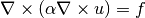
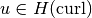
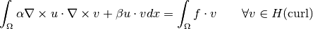
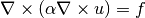
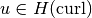
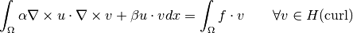

Advanced Examples - Auxiliary Maxwell Solver¶
We will try to build a good preconditioner for the equation:

After integrating by parts and adding a small regularization, we obtain the weak formulation:
Find  such that

We will try to build a good preconditioner for the equation:

After integrating by parts and adding a small regularization, we obtain the weak formulation:
Find  such that
